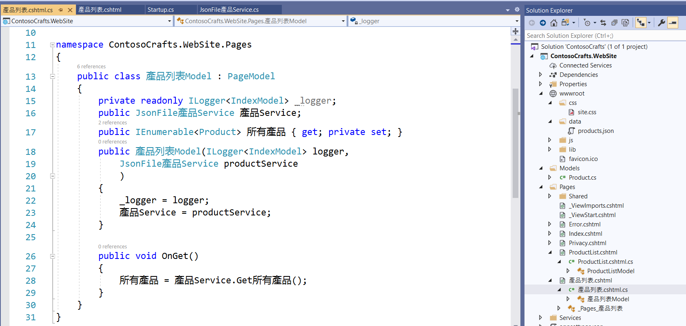

2020-06-19 中文入到代碼裡
傳統上，最保守是教代碼裡全部用 "英文"。
曾經有過的 "中文電腦化" 和 "電腦中文化" 的命題。
昨天提到 ASP.NET Core Web Application 強烈使用 Service。這系列教程很完整傳遞這個概念。
就我個人而言，沒有上手實做，其實不太有底氣，也會預期某些部份會斷層、接不上。
查看視頻
先講最後展現給一般用戶的效果。這裡是在網址上用了中文，可能十年前，這部分還不穩定，現在域名都可以用中文了（雖然沒有大流行），沒什麼道理網址不能用中文。
不過這不是今天的重點，都談不上是露在海面上的冰山一角。
程式語言和英文的學習有一個共通點，
知道基本的原則，可以先模仿照做。我按照 JsonFileProductService.cs 做了一個 JsonFile產品Service.cs。同時把其中目前唯一的功能名稱也中文化成為 Get所有產品。
按照 ASP.NET 的機制，將服務加到 Startup 的 ConfigureServices。完全就是照抄，當然記得要改名字。這不完成是笑話，會抄會改名是基本功，保括了對程式語言的理解才能會得到。
這樣子，在頁面後的 Model 调用我們模仿的新服務。

最後，在頁面調用其後的 Model 。
透過這樣的練習，一方向確認在 VS2019 裡 C# ASP.NET 的架構和寫法，也實驗了適當使用中文到代碼的可行性，和優勢。
對我而言，適當中文在代碼裡，指的是變量命名這部分，明顯增加了代碼可讀性。
命名規則是團隊協作的基石，以主流為基礎，根據自身的條件，因時因地的特性，做適當調整。
-- by Mark 陳炳陵 2020-06-19 于 草屯